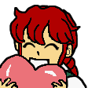
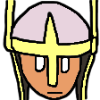
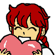
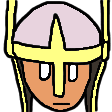

New Emotes
Didn't Think You'd See Me So Soon?
I finished my emotes (which are now live on Twitch!) in a pretty short time. Take a look!
 





Why flat colors? Twitch emotes' biggest file size is 112x112. For comparison, the Atari 2600 has a resolution of 160x192, and the NES has 256x240. There's very little room to make things in, so I think flat colors help make things pop out a lot more. Also, I tried to not have things that were related to me or the stream, instead of trying to make it more "generic" like a persona.
I'll be making one more picture before my vacation starting on Nov 9, so I'll be giving myself more than a week. After I come back on Nov 11, I'll be starting up once again.
That's all from me today!